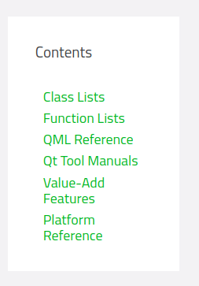
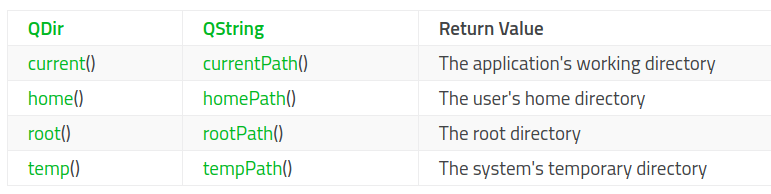
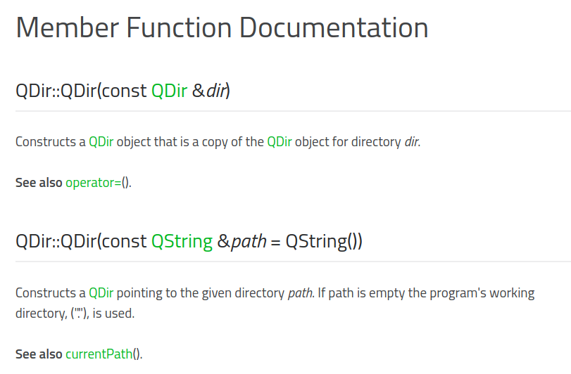

Qt的文档写的非常棒！学习QT最重要的就是学会看官方的文档，了解文档的结构有助于快速的查询文档，解决问题。Qt官方文档的主页为http://doc.qt.io
进入Qt Reference Documentation后可以看到Qt的文档还分为不同的分类，本文主要是介绍第一个分类：Class Lists

Class Lists中又有不同的索引方式，方便不同情景下查询：
Qt的class文档大致分为3个部分，Type（数据类型），Functions（成员函数），Macros（宏）。每个部分又分为两块，前一块是一个list，简单的列举，后一块为detail，详细信息。每个类的文档都是在同一个html页面上，采用锚点相互跳转，这也是非常棒的一点！
QDir Class 类名
The QDir class provides access to directory structures and their contents. More… 简单介绍功能，可点击查看详细
| Header: | #include |
|
| qmake: | QT += core |
说明header和qmake的包含操作
Public Types 公有的数据类型

1 | enum Filter { Dirs, AllDirs, Files, Drives, ..., CaseSensitive } |
The Filters type is a typedef for QFlags
. It stores an OR combination of Filter values.
Public Functions 公有成员函数

对象可以访问的函数,编程过程中主要查阅的就是这部分。
Static Public Members 静态成员函数
解决同一个类不同对象之间的数据共享问题。主要作用是用来访问同一个类中的静态数据成员，维护对象之间的数据共享。
访问不依赖于对象。
可以通过对象与类名进行调用，一般习惯与用类名进行访问。
1 | static QDir current() |
Macros 宏
Detailed Description
该部分介绍QDir的整体概览。又分为小的章节进行介绍
Navigation and Directory Operations
Files and Directory Contents
The Current Directory and Other Special Paths

Path Manipulation and Strings
Examples
Member Type Documentation

具体的介绍数据类型
Member Function Documentation


具体的介绍Function，包括static function。每个函数后有See also xxx()非常的方便。
Macro Documentation

具体的介绍宏